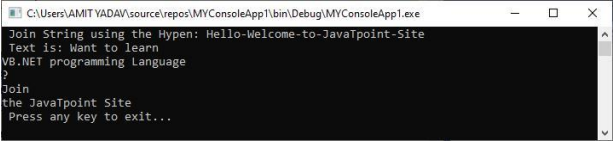

CHAPTER 6: VB.NET STRING and ARRAYS
Objectives:
a.) Discuss the declaration and initialization of String.
b.) Discover the Properties of the String Class.
c.) Create a program that will use an array list.
Lesson 1: VB.NET String
In VB.NET, string is a sequential collection of characters that is called a text. The String keyword is used to create a string variable that stores the text value. The name of the string class is System.String that contains the various function of string.
Declaration and Initialization of String
The following are the different ways to declare and initialize the string variable using the String keyword in the VB.NET programming language.
1. 'Declaration of the String variable
2. Dim str As String
3. Dim abc As String
4.
5. 'Initialization of String variable
6. Dim str As String = "Welcome to JavaTpoint."
7. Dim str1 As String = "Hello World!"
8.
9. 'Initialize a null string
10. Dim str2 As String = Nothing
11.
12. 'Initialization of an empty string
13. Dim name As String = String.Empty
14.
15. 'Creating a String from char
16. Dim letter As Char() = {"H", "E", "L", "L", "O"}
In the above declaration of string, we have defined the string variable with string keyword and initialize string variable with value based on our requirements.
Creating a String Object
Page | 1
There are different ways to create a string object in the String.
- To use a String class constructor.
- By using the property or calling method to return a string.
- Use a string literal to define a string variable.
- Use a String concatenation operator (+).
- By using a formatting function to convert a value or object into the string representation of the object.
Let's create an example to demonstrates the uses of String objects.
String_object.vb
1. Imports System
2. Module String_object
3. Sub Main()
4. Dim str, str2, fullname, data As String
5. str = "Hello"
6. str2 = "World!"
7. fullname = str + " " + str2
8. Console.WriteLine(" Message is {0}", str)
9. Console.WriteLine(" Message is {0}", str2)
10. Console.WriteLine(" Fullname is {0}", fullname)
11. ' By using string constructor
12. Dim str3 As Char() = {"H", "e", "I", "J", "O"}
13. data = New String(str3)
14. Console.WriteLine(" Your message is {0}", data)
15. ' Use of returning string
16. Dim arr() As String = {" Hello", "Welcome", "to", "JavaTpoint"}
17. Dim msg As String = String.Join(" ", arr)
18. Console.WriteLine(" You have defined these parameters as string array {0}", msg)
19. ' Use of Formatting method to convert a value to the string
20. Dim time As DateTime = New Date(2020, 6, 18, 18, 48, 2)
21. Dim sentmsg As String = String.Format(" Your message has been successfully sent at {0:t} on {0:D}", time)
22. Console.WriteLine(" Your text is that {0}", sentmsg)
Page | 2
28. Console.WriteLine(" Press any key to exit...")
29. Console.ReadKey()
30. End Sub
31. End Module
Output:
For more knowledge about String, please check the link provided;
https://www.youtube.com/watch?v=zAaKeI oL9c&list=PLsJBMeqEdtggJi2khGAjgnQ3ssgzWw uz&index=7
Lesson 2: Immutable string object
In VB.NET, the string object is immutable. It means that once we have created a string object, it cannot be modified during its execution. And if we modified an existing value in a string object through addition and subtraction, it discards the old value of instance in memory and creates a new instance to hold a new value. Furthermore, if we want to perform any operation in the String object, we must define an object every time to create a new String object. So, in that case, the string provides the System.Text.StringBuilder class to modify a string without creating a new object.
Properties of the String Class
Following are the two properties of string class:
- Chars: It is used to get the character from the current string object.
- Length: It is used to return the number of characters in the current string object. Access individual characters from Strings in VB.NET
In VB.NET, we can access the individual character from the current string object with index values.
Let's write a program to access the individual characters from the string by defining an index position.
Get_Chars.vb
Page | 3
1. Imports System
2. Module Get_Chars
3. Sub Main()
4. Dim i As Integer
5. ' Declaration of String variable
6. Dim name As String = "Hello World!"
7. Console.WriteLine(" These are Characters in Hello World! String : ")
8. For i = 0 To name.Length - 1 ' Count from 0 to Length - 1
9. Console.WriteLine(name(i))
10. Next
11. Console.WriteLine("Length is {0}", name.Length) ' Use of Length Properties
12. Console.WriteLine(" Press any key to exit...")
13. Console.ReadKey()
14. End Sub
15. End Module
Output:
In the above program, a For loop is continuously executed each element of the String variable's value is Hello World! Until the condition (name.Length -1) is reached. Here, Length function is used to count the number of characters in the string.
There are various functions of string class that helps to manipulate the string objects.
-
Compare(): It is used to compare two specified string objects, and if the string is less than another string object, it returns an integer value.
Syntax:
1. Public Shared Function Compare ( str1 As String, Str2 As String ) As Integer
Page | 4
The returned integer value represents the relationship between two specified string objects. The following table shows the string comparison condition that returns the integer value after comparing two specified string items.
| Compare String Condition |
It returns an integer value |
| Str1 == Str2 |
0 |
| Str1 > Str2 |
1 |
| Str1 < Str2 |
-1 |
Example: Write a program to understand the uses of Compare() function in String Class.
String_cmp.vb
1. Imports System.String
2. Module String_cmp
3. Sub Main()
4. 'Definition of local String variable
5. Dim Str1 As String = "Hello"
6. Dim Str2 As String = "Cello"
7. 'Use of String.compare() function
8. Console.WriteLine(" Comparison of String {0} and {1} result is {2}", Str1, Str2, String. Compare(Str1, Str2))
9.
10. Dim Sdata As String = " WELCOME"
11. Dim Sdata2 As String = " Welcome"
12. ' Use of String.Compare() function
13. Console.WriteLine(" Comparison result of String {0} and {1} result is {2}", Sdata, Sdata2, String.Compare(Sdata, Sdata2))
14.
15. Dim Sdata3 As String = "Hello"
16. Dim Sdata4 As String = "Hello"
17. ' Use of String.Compare() function
18. Console.WriteLine(" Comparison result of String {0} and {1} result is {2}", Sdata3, Sdata4, String.Compare(Sdata3, Sdata4))
19.
20. Console.WriteLine(" Press any key to exit...")
21. Console.ReadKey()
22. End Sub
23. End Module
Page | 5
Output:
In the above example, the string compare () method checks the values of two string variables and returns integer values.
-
Concat()
The Concat() function is used in string class to join two or more strings or append one string to the end of another string. It is useful when we need to combine two or more text to make a sentence, and it returns a new string.
Syntax:
1. Public Shared Function Concat( Str1 As String, str2 As String ) As String
And when we use more than three string parameters to combine, we have to define this way:
Syntax:
1. Public Shared Function Concat( Str1 As String, Str2 As String, Str3 As String ) As String
Let's create a program to understand the uses of the Concat() function to append or concatenate one or more strings in the VB.NET programming language.
String_concate.vb
1. Imports System.String
2. Module String_concate
3. Sub Main()
4. 'Definition of local variables
5. Dim str As String = "Learn"
6. Dim Str2 As String = " " & "\VB.NET Programming Language"
7. 'Use of Concat() function to combine two string variable
8. Console.WriteLine("Your String is {0}", String.Concat(str, Str2))
9.
10. Dim val As String = "Want to"
11. Dim val2 As String = " " & "Learn String methods"
12. Dim str3 As String = " " & "in VB.NET language?"
13. 'Use of Concat() function to combine two or more string variable
15. Console.WriteLine("Your Sentence is {0}", String.Concat(String.Concat(val, val2), str 3))
16. Console.WriteLine("Press any key to exit...")
17. Console.ReadKey()
18. End Sub
19. End Module
Page | 6
Output:
In the above program, we used a Concat() function to combine one or more strings to return a single string.
-
Contains(): It is used to validate whether the specified text or parameter exists in the current string. If the text is existing in the string, it returns a true Boolean value; otherwise, it returns false.
Syntax:
1. Public Shared Function Contains ( text As String ) As Boolean
Let's create a program to understand the uses of the Contains() function to check whether the particular string exists or not in a given string.
String_contain.vb
1. Imports System.String
2. Module String_contain
3. Sub Main()
4. 'Definition of local variables
5. Dim msg As String = "Welcome to VB.NET Language."
6. Dim txt As String = "VB.NET"
7.
8. 'Use of Contains() function
9. Console.WriteLine("Does {0} String Contains {1}:{2}", msg, txt, msg.Contains(txt))
10.
11. Dim str As String = "String is the collection of characters."
12. Dim strtxt As String = "Collection"
13.
14. 'Use of Contains function
Page | 7
15. Console.WriteLine("Does {0} Sentence Contains {1}:{2}", str, strict, str.Contains(str txt))
16.
17. Console.WriteLine(" Press any key to exit...")
18. Console.ReadKey()
19. End Sub
20. End Module
Output:
In the above program, the String Contains() function is to determine whether the given string str contains the value of sttext, and if the value exists in the str, it returns a true value; otherwise, it returns false.
-
String Copy(): In the String class, there is a Copy() function used to create a new string object with the same content or value specified in the original string.
Syntax:
1. Public Shared Function Copy (str1 As String ) As String
Let's create a program to understand the uses of Copy() function in the VB.NET programming language.
String_copy.vb
1. Imports System.String
2. Module String_Copy
3. Sub Main()
4. 'Declaration and Initialization of local variable
5. Dim str As String = " Welcome to JavaTpoint"
6. ' Use String.Copy() function
7. Dim str2 As String = String.Copy(str)
8. Console.WriteLine(" Text in First String is {0}", str)
9. Console.WriteLine(" Copy text is {0}", str2)
10.
11. ' Use String.Copy() function
12. Console.WriteLine("Text in Copy String : {0}", String.Copy(str))
Page | 8
13. Console.WriteLine(" Does the Object reference equal? {0}", Object.ReferenceEquals (str, str2))
14.
15. Console.WriteLine(" Press any key to exit...")
16. Console.ReadKey()
17. End Sub
18. End Module
Output:
div>
-
CopyTo(): A CopyTo () function is used to copy the specified number of characters from the original string object.
Syntax:
1. Public Sub CopyTo( sourceIndex As Integer, destination As Char(), destinationIndex As Integer, count As Integer )
Create a simple program of the CopyTo() function to copy a string in the VB.NET programming language.
String_CopyTo.vb
1. Imports System.String
2. Module String_CopyTo
3. Sub Main()
4. ' Declaration of String variable
5. Dim data As String = "Welcometojavatpoint"
6. ' Declaration of strcpy array
7. Dim strcpy(25) As Char
8. Console.WriteLine("Original String is: {0}", data)
9. ' use CopyTo() method
10. data.CopyTo(9, strcpy, 0, 10)
11. Console.WriteLine("Copied character is " + strcpy)
12. Console.WriteLine(" Press any key to exit...")
13. Console.ReadKey()
14. End Sub
15. End Module
Page | 9
Output:
-
EndsWith(): The EndsWith() function is used to check whether the text or parameter specified in the original string ended with the specified text.
Syntax:
1. Public Function EndsWith( ByVal As String ) As Boolean
Let's create a program to understand the uses of EndsWith() function in the VB.NET programming language.
String_With.vb
1. Imports System.String
2. Module String_With
3. Sub Main()
4. 'Definition of String variable
5. Dim str As String
6. str = " VB.NET is the best programming language"
7. ' Use of EndsWith() function in String Class
8. If str.EndsWith("language") = True Then
9. Console.WriteLine(" The String statement EndsWith 'language'")
10. Else
11. Console.WriteLine(" The string is not EndsWith 'language'")
12. End If
13. Console.WriteLine(" Press any key to exit...")
14. Console.ReadKey()
15. End Sub
16. End Module
Output:
In the above program, the EndsWith() function is checked whether the defined text 'language' specified in the original string object str ends with the word language.
Page | 10
-
Equals(): As the name defines, an Equals() function is used in the string class to determine if both string objects have the same value or not. If the value is the same, the Equals() string methods are true; otherwise, it returns false. And if both objects have null values, the Equals() function returns a true value.
Syntax:
1. Public Function Equals ( ByVal A As String, ByVal B As String ) As Boolean
Let's create a program to understand the uses of EndsWith() function in the VB.NET programming language.
Equal_String.vb
1. Imports System.String
2. Module Equal_String
3. Sub Main()
4. 'Definition of local variable
5. Dim str = "Welcome"
6. Dim str2 = "welcome"
7. 'Use of Equals() function
8. Console.WriteLine("Are string {0} and {1} equal? : {2}", str, str2, String.Equals(str, str 2))
9. Dim str3 = "Welcome"
10. Console.WriteLine("Are string {0} and {1} equal? : {2}", str, str3, String.Equals(str, str 3))
11. Console.WriteLine(" Press any key to exit...")
12. Console.ReadKey()
13. End Sub
14. End Module
Output:
In the above example, the String Equals() method checks whether the specified strings object is equal. If yes, it returns True value; otherwise, it returns False.
-
String Format(): The Format() function is used to replace one or more objects with the specified string object. By using the Format() function, we can insert the value of a variable into another object string.
Syntax:
1. Public Function Format( Format_object As String, arg0 As Object ) As String
Let's create a program to understand the uses of Format() function in the VB.NET programming language.
String_Format.vb
1. Imports System.String
2. Module String_Format
3. Sub Main()
4. ' Declaration and Representation of Format String
5. Dim rep_string As String = " Tutorial: {0}, Topic: {1}, Method Name: {2} "
6.
7. 'Use of String.Format() function
8. Dim spec_string As String = String.Format(rep_string, "\VB.NET", "String", "Format_S string")
9.
10. Console.WriteLine(" Representation of String is {0}", spec_string)
11. Console.WriteLine(" Press any key to exit...")
12. Console.ReadKey()
13. End Sub
14. End Module
Page | 11
Output:
In the above example, the string Format() method has replaced the format objects {0} with "VB.NET", {1} with "String" and {2} with "Format_String".
-
IndexOf(): The String IndexOf() function is used to return the index position of the first occurrence of the specified character or string in the original string object, followed by the zero (0) index. Furthermore, we can also define the starting index position of the specified character or string in the original string.
Syntax:
1. 'Getting a Char:
2. Public Function IndexOf( ByVal As Char ) As Integer
3.
4. 'For Getting a String:
5. Public Function IndexOf( ByVal As String ) As Integer
6.
7. 'Define the starting position of the character
8. Public Function IndexOf( ByVal As Char, StartIndex As Integer ) As Integer
9.
10. 'Define the starting position of the String
11. Public Function IndexOf( ByVal As String, StartIndex As Integer ) As Integer
Let's create a program to understand the uses of IndexOf() function in VB.NET programming language.
indexOf_String.vb
1. Imports System.String
2. Module indexOf_String
3. Sub Main()
4. Dim Str As String = "JavaTpoint"
5. Dim txt As String = "Welcome to JavaTpoint Site"
6. 'Use of IndexOf() function to get specified character position
7. Console.WriteLine(" Occurrence of character T index position {0}", Str.IndexOf("T"))
8.
9. 'Use of IndexOf() function to get the Specified String position of specified String
10. Console.WriteLine(" Occurrence of String position {0}", txt.IndexOf("JavaTpoint"))
11.
12. 'Starting position of p is 5
13. Console.WriteLine(" Define the starting position of the Character p is {0}", Str.Index Of("p", 5))
14.
15. 'Starting position of JavaTpoint is 5
16. Console.WriteLine(" Define the starting position of the String 'JavaTpoint' is {0}", txt .IndexOf("JavaTpoint", 11, 15))
17.
18. Console.WriteLine(" Press any key to exit...")
19. Console.ReadKey()
20. End Sub
21. End Module
Page | 12
Output:
In the above example, we used an IndexOf() function to get the specified position of a character or string from the original string in VB.NET programming.
-
Insert(): The Insert() function of the String class is used to insert a specified string at the specified position in the original string object.
Syntax:
1. Public Function Insert (StartIndex As Integer, ByVal As String ) As String
Let's create a program to understand the uses of Insert() function in the VB.NET programming language.
String_Insert.vb
1. Imports System.String
2. Module String_Insert
3. Sub Main()
4. Dim name = "Welcome to Site"
5. Dim str_name = "JavaTpoint"
6. 'Use of Insert() function
7. Console.WriteLine(" Inserted String {0} into Original string is {1}", str_name, name.l nser({11, " JavaTpoint"})
8. Console.WriteLine(" Press any key to exit...")
9. Console.ReadKey()
10. End Sub
11. End Module
Output:
-
Remove(): The remove function is used to remove or delete characters at the specified position until the end of the defined string object. Furthermore, we can use the remove () function to remove a set of characters by defining the beginning and end positions of the characters to be removed from the original string.
Syntax:
1. Remove Single Character
2. Public Function Remove( StartIndex As Integer ) As String
3. Set of Character
Page | 13
4. Public Function Remove( StartIndex As Integer, Length As Integer) As String
Let's create a program to understand the uses of Insert() function in the VB.NET programming language.
String_Remove.vb
1. Module String_Remove
2. Sub Main()
3. Dim str As String = " Welcome to JavaTpoint Site "
4. ' For Single Character
5. Console.WriteLine(" Remove a Single character {0}", str.Remove(3))
6.
7. ' For Group of character
8. Console.WriteLine(" Remove a set of character from the original String {0}", str.Remove(1, 3))
9. Console.WriteLine(" Press any key to exit...")
10. Console.ReadKey()
11. End Sub
12. End Module
Output:
-
Replace(): The String Replace() function is used to replace all the occurrence of a specified character or string from the original string object and then return a new string.
Syntax:
1. // Get the replace char
2. Public Function Replace ( oldValue As Char, newChar As Char ) As String
3. // Get the replace String
4. Public Function Replace (oldValue As String, newValue As String) As String
Let's create a program to understand the use of Replace() function in the VB.NET programming language.
String_Replace.vb
Page | 14
1. Imports System.String
2. Module String_Replace
3. Sub Main()
4.
5. Dim ch As String = "abababab"
6. 'Use Replace() function to replace Single Character
7. Dim strchar As String = ch.Replace("a", "c")
8. Console.WriteLine(" Old Value is {0}", ch)
9. Console.WriteLine(" New Value is {0}", strchar)
10.
11. Dim str As String = "It's Okay not to be Okay"
12. 'Use Replace() function to replace String
13. Dim nstr As String = str.Replace("Okay", "Fine")
14. Console.WriteLine(" Old String is {0}", str)
15. Console.WriteLine(" New String is {0}", nstr)
16.
17. Console.WriteLine(" Press any key to exit...")
18. Console.ReadKey()
19. End Sub
20. End Module
Output:
In the above example, we used a Replace() function to replace a specified character or string from the given string in the VB.NET programming.
-
Join(): As the name suggests, a Join() function is used to concatenate all the specified elements of the string array using the specified separator.
Syntax
1. Public Shared Function Join ( Separator As String, paramArray Value As String()) As String
Let's create a program to understand the uses of Join() function in the VB.NET programming language.
Page | 15
String_Join
1. Imports System.String
2. Module String_Join
3. Sub Main()
4. Dim strArray() As String = {"Hello", "Welcome", "to", "JavaTpoint", "Site"}
5. 'Use of String.Join() function
6. Dim strSep As String = String.Join("-", strArray)
7. Console.WriteLine(" Join String using the Hyper: {0}", strSep)
8.
9. Dim textArray() As String = {"want to learn", "VB.NET programming Language", "?", "Join", "the JavaTpoint Site"}
10. 'Use the String.Join() function with Space (vbCrLf) Separator
11.
12. Console.WriteLine(" Text is {0}", String.Join(vbCrLf, textArray))
13. Console.WriteLine(" Press any key to exit...")
14. Console.ReadKey()
15.
16. End Sub
17. End Module
Output:

In the above program of String Join() function, we used hyphen (-) and comma (,) separator to concatenates all the elements of the string array.
-
Split(): As the name suggests, the string Split() function is used to split a given string into substrings with the help of delimiters that are used to split a string in VB.NET programming language. Furthermore, we can specify the number of characters that should be returned in the substring.
Syntax:
1. Public Function Split (ParamArray separator As Char()) As String()
2. 'Specifies the character length
3. Public Function Split (ByVal separator As Char(), count As Integer) As String
Page | 16
Let's create a program to understand the uses of the Split() function in the VB.NET programming language.
String_Split.vb
1. Imports System.String
2. Module String_Split
3. Sub Main()
4. Dim str As String = "Welcome-to-JavaTpoint"
5. 'Use of Split() function
6. Dim txtArray As String() = str.Split(New Char() {"."c"}
7. For i As Integer = 0 To txtArray.Length - 1
8.
9. Console.WriteLine(txtArray(i))
10. Next
11. Console.WriteLine(" Press any key to exit...")
12. Console.ReadKey()
13. End Sub
14. End Module
Output:
In the above example, we used a Split() function to split the given string (Welcome-to-JavaTpoint") with a separator hyphen (-), and it returns a split string as an array. And the For loop is used to display each item of an array element.
-
StartsWith(): The StartsWith() function of String class is used to determine whether the string's beginning is matched with a specified string object. If the string is matched, it returns True value; otherwise, it shows False.
Syntax:
1. Public Function StartsWith ( ByVal As String ) As Boolean
Let's create a program to understand the uses of StartsWith() function in the VB.NET programming language.
For more knowledge about SubString, please check the link provided;
https://www.youtube.com/watch?v=sMOiG3wvidic&list=PLC601DEA22187BBF1&index=20
Page | 17
Lesson 3: VB.NET ArrayList
Collection Classes
The collection classes are special-purpose classes that are useful for storing data, dynamically allocating memory, retrieving a list of items or elements on the basic index number, etc. Furthermore, the collection classes also support Lists, ArrayList, Hash tables, queues, stacks, etc. that apply to the same interface.
ArrayList
The arrayList is an ordered collection of data elements that can be indexed individually in a list. The flexible data structure allows multiple objects to be added in a list without any size information. It is similar to the array. With the use of indexes in the ArrayList, we can add or remove an element from the list's specified location. Further, it also allows search, sort, add, and dynamic memory allocation in the ArrayList.
Uses of ArrayList
The following are the important uses of the ArrayList object.
-
Add: Add a data element to ArrayList.
Syntax:
1. ArrayList.add(Element)
-
Insert: Insert data element at specified location of ArrayList.
Syntax:
1. ItemList.insert(index, "element_name")
-
Remove: Remove an element from ArrayList.
Syntax:
1. ArrayList.Remove(element)
-
RemoveAt: Remove data elements from the specified location of ArrayList.
Syntax:
1. ArrayList.RemoveAt(indexNo)
indexNo: It represents the specified position of the item to be removed from the ArrayList.
-
Sort(): As the name suggests, it is used to sort all elements of the ArrayList.
Syntax:
1. ArrayListSort()
Page | 18
Properties of the ArrayList Class
Following are the property of the ArrayList Class in the VB.NET
| Property name |
Description |
| Capacity |
It is used to get all elements of the ArrayList. |
| IsFixedSize |
It gets a value that determines if the ArrayList has a fixed size. |
| Count |
It is used to count the number of elements available in the ArrayList. |
| IsReadOnly |
It returns the value that verifies if the ArrayList is read-only. |
| Item |
It is used to get or set an item at a specified position in the ArrayList. |
Methods of the ArrayList class
Following are the various methods of the ArrayList Class in the VB.NET
Method Name and their description
-
Add() Method: The Add() function is used to add an item to the end of the ArrayList.
Syntax:
1. Public Overridable Function Add(ByVal As Object) As Integer
-
Clear() Method: The Clear() method is used to clear all the elements from the ArrayList
Syntax:
1. Public Overridable Sub Clear()
-
Insert() Method: The Insert() method is used to insert an element into the specified location of the ArrayList.
Syntax:
1. Public Overridable Sub Insert(index As Integer, ByVal As Object)
-
Contains() Method: The Contains() Method is used to check whether the specified element exists in the ArrayList.
Syntax:
1. Public Overridable Function Contains(element As Object) As Boolean.
-
Remove() Method: The Remove() Method is used to remove a specified element from the ArrayList.
Syntax:
1. Public Overridable Sub Remove(obj As Object)
-
InsertRange() Method: The InsertRange() method is used to insert the collections of elements at the specified location in the ArrayList.
Syntax:
1. Public Overridable Sub InsertRange (index As Integer, c As iCollection)
Page | 19
-
RemoveRange() Method: The RemoveRange() method is used to set a range for removing the elements from the ArrayList.
Syntax:
1. Public Overridable Sub RemoveRange(index As Integer, count As Integer)
-
Reverse() Method: The Reverse() Method is used to reverse the order of the elements to the ArrayList.
Syntax:
1. Public Overridable Sub Reverse
-
RemoveAt() Method: The RemoveAt() method is used to remove an array element from the specified index of the ArrayList.
Syntax:
1. Public Overridable Sub RemoveAt(index As Integer)
Let's create a program to understand the various function of ArrayList in the VB.NET programming language.
Alist.vb
1. Imports System.Collections.ArrayList
2. Module Alist
3. Sub Main()
4. Dim arrList As ArrayList = New ArrayList()
5. Dim i As Integer
6. Console.WriteLine(" Added elements in the ArrayList")
7.
8. ' Use of Add() function
9. arrList.Add(50)
10. arrList.Add(55)
11. arrList.Add(10)
12. arrList.Add(70)
13. arrList.Add(10)
14. arrList.Add(40)
15. arrList.Add(13)
16. For Each i in arrList
17. Console.WriteLine("{0}", i)
18. Next i
Page | 20
19. Console.WriteLine()
20.
21.
22. 'Use of Count to count the total elements in the ArrayList
23. Console.WriteLine(" Total Elements = {0}", arrList.Count)
24.
25. 'Use of Capacity to check the element can be contained in ArrayList
26. Console.WriteLine(" Capacity of the ArrayList = {0}", arrList.Capacity)
27.
28. Console.WriteLine("Sorted Elements in ArrayList:")
29. arrList.Sort() ' Use of Sort() function
30.
31. For Each i in arrList
32. Console.WriteLine(" {0} ", i)
33. Next i
34.
35. ' Use of Remove() Function
36. Console.WriteLine(" Remove 13 from the ArrayList")
37. arrList.Remove(13)
38. For Each i in arrList
39. Console.WriteLine(" {0} ", i)
40. Next i
41.
42. ' Use of RemoveAt() Function
43. Console.WriteLine(" Remove an item from a specified position [3]")
44. arrList.RemoveAt(3)
45. Console.WriteLine(" After Removing the item ")
46. For Each i in arrList
47. Console.WriteLine(" {0} ", i)
48. Next i
49. Console.WriteLine()
50. Console.WriteLine(" Press any key to exit...")
51. Console.ReadKey()
52. End Sub
53. End Module
Page | 21
Output:
For more knowledge about Arrat List, please check the link provided;
https://www.youtube.com/watch?v=dx_uGBT0hM&list=PLC601DEA22187BBF18index=77
REFERENCES
https://www.javatpoint.com/vb-net-string
https://www.javatpoint.com/vb-net-arravlist
Page | 22